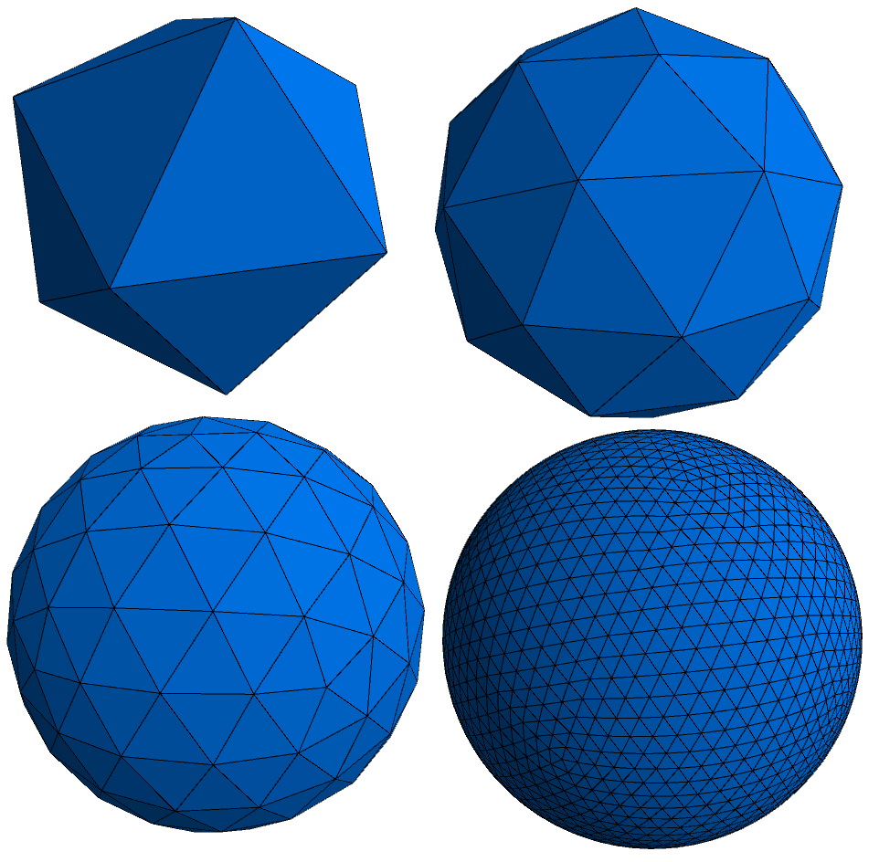
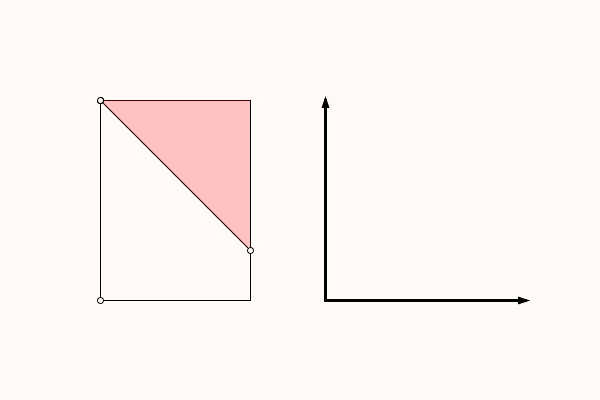
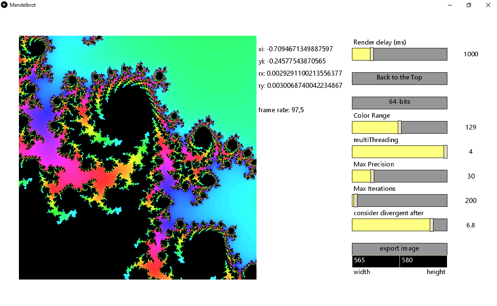

back
Miscellaneous
Some approximations of a sphere using the icosahedron.

Based on a geomtry problem I had in an exam once.
The graph represents the area of the pink zone in the figure.

A Mandelbrot Fractal viewer with multithreading and arbitraty precision mode.

back